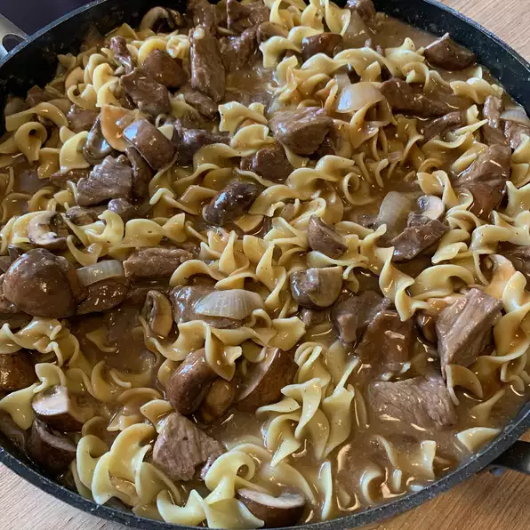

Beef Stroganoff Recipe

Beef Stroganoff is an originally Russian dish of sautéed pieces of beef served in a sauce of mustard and smetana (sour cream). From its origins in mid-19th-century Russia, it has become popular around the world, with considerable variation from the original recipe. Mushrooms are common in many variants.is an originally Russian dish of sautéed pieces of beef served in a sauce of mustard and smetana (sour cream). From its origins in mid-19th-century Russia, it has become popular around the world, with considerable variation from the original recipe. Mushrooms are common in many variants.
The dish is named after one of the members of the influential Stroganov family. A legend attributes its invention to French chefs working for the family, but several researchers point out that the recipe is a refined version of older Russian dishes.
Ingredients
- 2 pounds beef chuck roast
- ½ teaspoon salt
- ½ teaspoon ground black pepper
- 4 ounces butter
- 4 green onions, sliced (white parts only)
- 4 tablespoons all-purpose flour
- 1 (10.5 ounce) can condensed beef broth
- 1 teaspoon prepared mustard
- 1 (6 ounce) can sliced mushrooms, drained
- ⅓ cup sour cream
- ⅓ cup white wine
- salt and ground black pepper to taste
Directions
- Remove any fat and gristle from chuck roast; cut into strips 1/2-inch thick by 2-inches long. Season with ½ teaspoon salt and ½ teaspoon pepper.
- Melt butter in a large skillet over medium heat. Add beef and brown quickly; push to one side of the skillet. Add onions; cook and stir for 3 to 5 minutes, then push to the side with beef.
- Stir flour into juices on the empty side of the pan. Pour in beef broth and bring to a boil, stirring constantly. Lower the heat and stir in mustard. Cover and simmer for 1 hour or until the beef is tender.
- Five minutes before serving, stir in mushrooms, sour cream, and white wine. Cook until heated through; season to taste with salt and pepper.